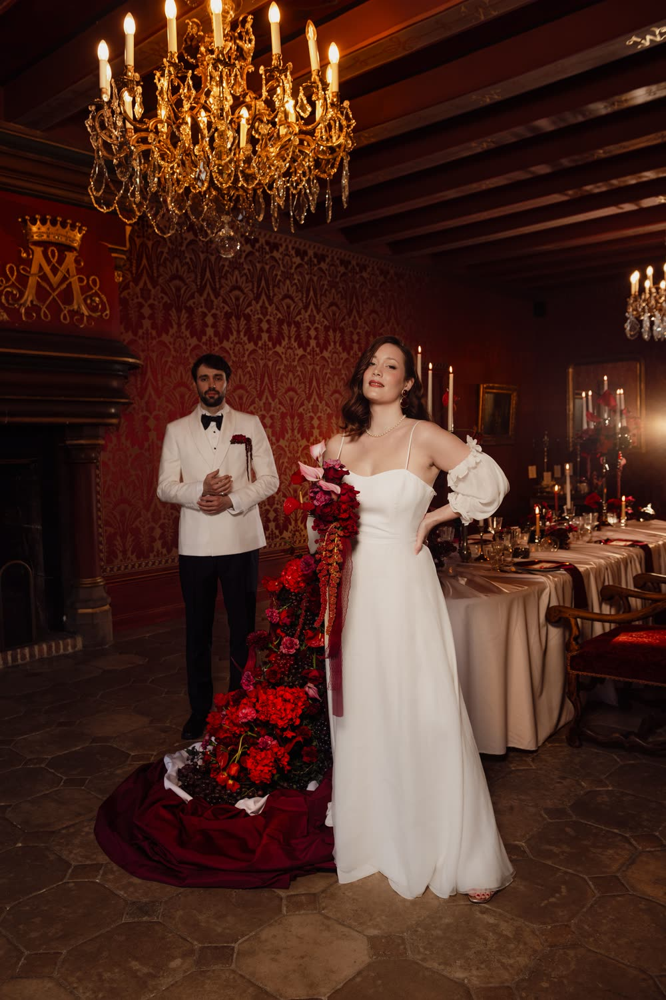
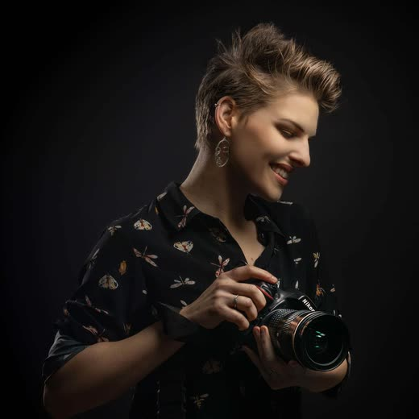
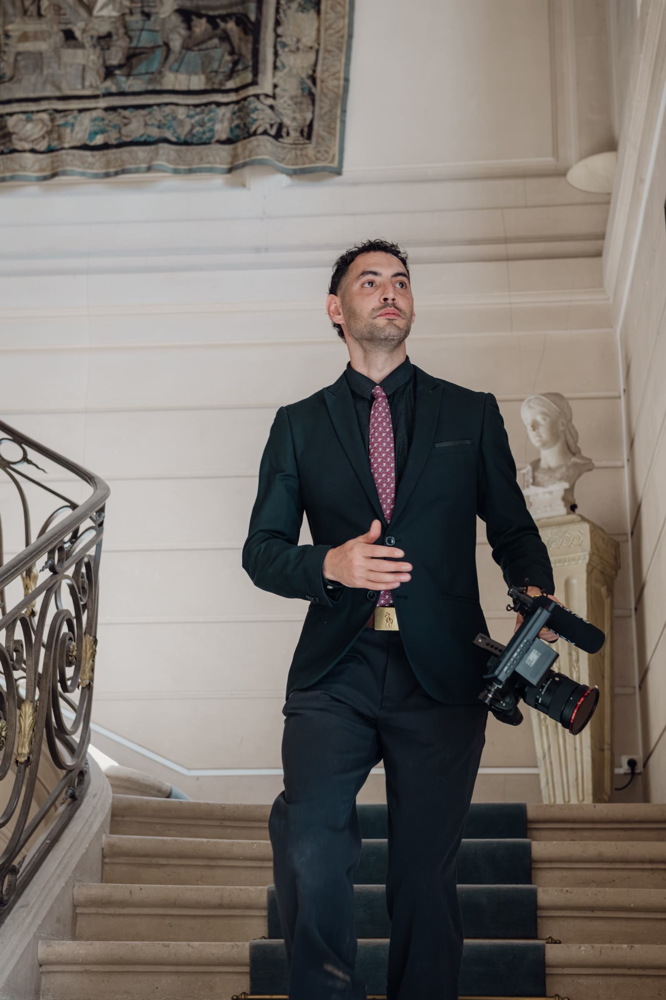
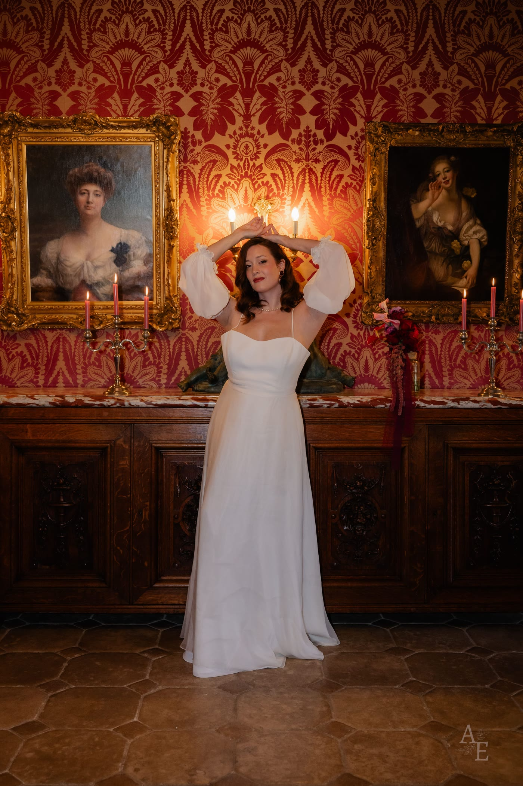
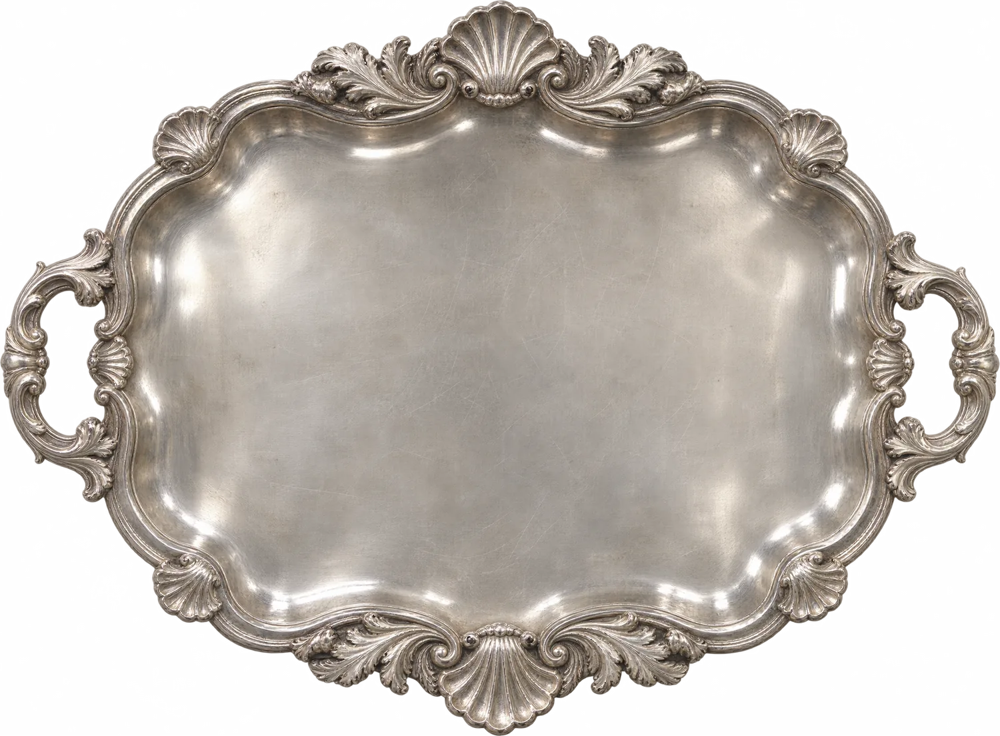
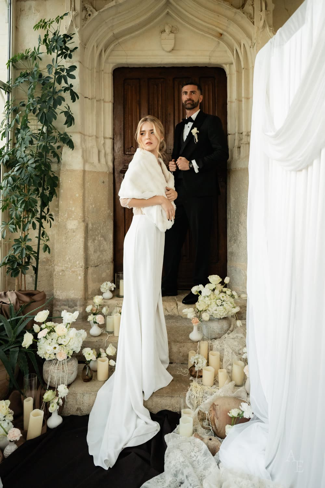
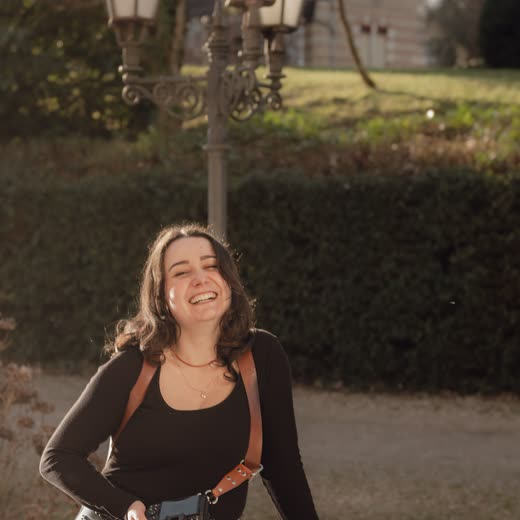

photographe
Mélanie Malfoy
Centre-Val de Loire
Photographe diplômée, installée en Centre-Val de Loire. Un regard sensible et le goût du détail, des préparatifs aux derniers instants de la soirée.
La brochure duo PDFVallée de la Loire
Partout en France
Vidéaste de mariage
Vallée de la Loire et partout en France
Moi c’est Charly, originaire de Besançon et installé au cœur de la Vallée de la Loire. Au départ, je ne me voyais pas filmer des mariages. J’avais peur d’y laisser ma créativité. Plusieurs années plus tard, je sais que c’est tout le contraire. Une journée de mariage ne se rejoue pas. Elle m’oblige à être rapide, efficace et discret, et c’est précisément là que je crée le plus. Pour la séance couple, j’apporte ma lumière et je vous guide dans des poses, selon vos envies.
Faire connaissance
Les Hauts de Sancerrele film du shooting
Extraits de mes films

Les films

« Au premier visionnage nous avons eu des frissons et des larmes. Tous nos proches ont été bluffés par la qualité. »
« Adorable, discret et très à l’écoute tout au long de notre journée. Le résultat est magnifique. »
« Il a su mettre en vidéo notre thème et notre journée. Nous sommes ravis du résultat ! »
« Il a capturé les moments les plus magiques de notre mariage en se fondant dans le décor. »
« Il a su capter l’essence de notre journée avec discrétion, sensibilité et une bonne humeur communicative. »
« Vous avez capturé des moments inoubliables avec talent. Nous sommes ravis ! »
« Il nous a fait un travail au-delà de ce qu’on espérait. Il a été vraiment le pilier de notre mariage. »
« Vous ne vous lasserez pas de regarder et re-regarder votre film de mariage. »
« Chaque moment, détail, émotion ont été capturés à la perfection. Un immense talent de vidéaste ! »
« Charly sait se montrer discret mais avec une efficacité toujours au rendez‑vous. »
Offre duo
Deux photographes dont j’aime le regard et avec qui je travaille. Réservés ensemble, photo et vidéo profitent d’un tarif duo, détaillé dans chaque brochure.


photographe
Centre-Val de Loire
Photographe diplômée, installée en Centre-Val de Loire. Un regard sensible et le goût du détail, des préparatifs aux derniers instants de la soirée.
La brochure duo PDF

photographe
Lyon et destinations
Mariages et destination weddings, depuis Lyon. Une approche authentique et bienveillante, et un œil pour les détails lumineux.
La brochure duo PDFProchaine étape
Vingt minutes pour parler de votre journée, sans engagement ni devis automatique. Dites-moi comment vous joindre.
Ou directement 07 71 06 32 18 qualimatic.production@gmail.com